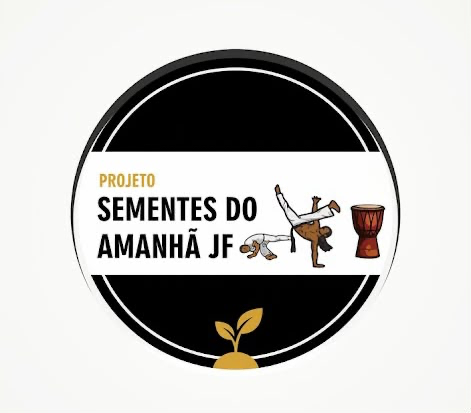
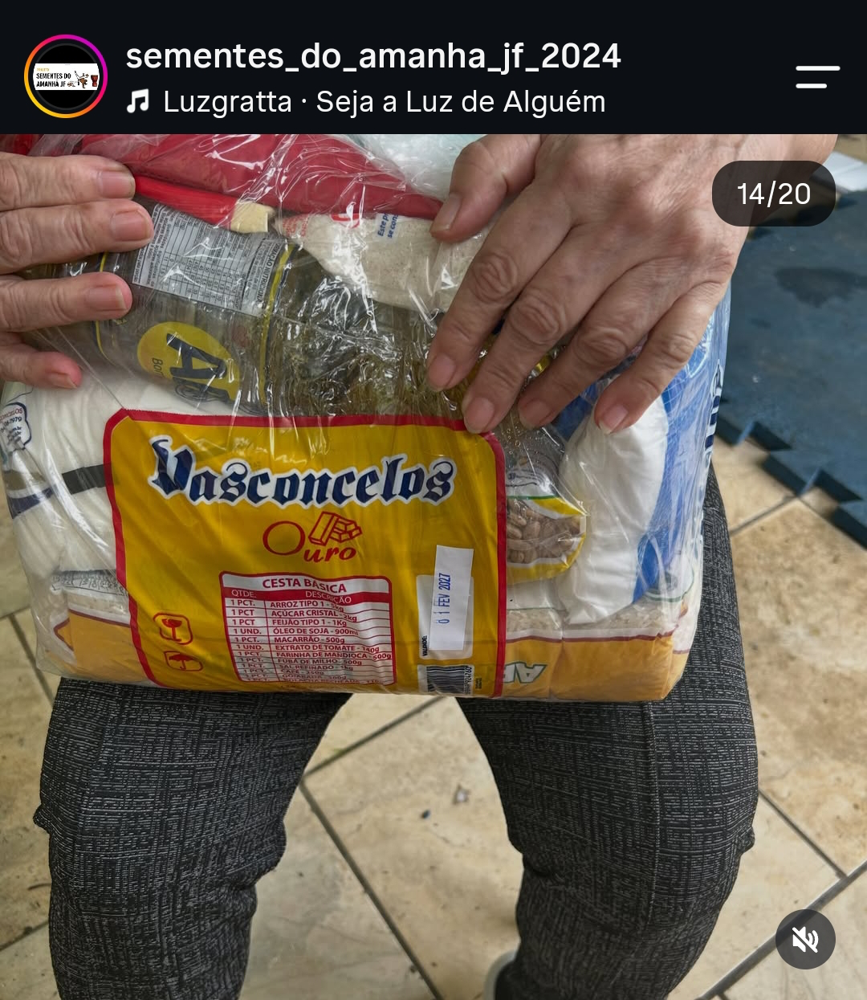

Galeria
Registros das atividades e da comunidade do projeto.


Capoeira, cultura e ações sociais que apoiam famílias em vulnerabilidade com alimentos, afeto e oportunidades.
Quero ajudar Conheça o projeto
Coordenado por PRISCILA CHAGAS
Missão do Projeto Social Sementes do Amanhã JF
A missão do Projeto Social Sementes do Amanhã JF é promover a inclusão social, a educação, o esporte, a cultura, a solidariedade e a cidadania, oferecendo oportunidades de desenvolvimento e transformação de vida para crianças, adolescentes, jovens, mães atípicas e famílias em situação de vulnerabilidade social.
Por meio da capoeira, das atividades culturais e educativas, do apoio alimentar, do Varal Solidário e de ações comunitárias, buscamos fortalecer vínculos familiares, acolher quem mais precisa, combater a fome, valorizar as diferenças e garantir que cada pessoa tenha a oportunidade de desenvolver seu potencial com dignidade, respeito e esperança.
Acreditamos que pequenas sementes de amor, conhecimento e solidariedade podem gerar grandes mudanças na sociedade. Por isso, trabalhamos diariamente para construir um futuro mais justo, inclusivo e cheio de oportunidades, no qual ninguém seja deixado para trás.
Nosso lema:
“Plantando sonhos, colhendo futuros.”
Quatro frentes de trabalho
Aulas, batizados e trocas de corda que levam cultura e disciplina às crianças.
Alimentos, agasalhos, brinquedos e ração para famílias e animais.
Festa de Natal e outras ações para que toda criança tenha um dia feliz.
Espaço de escuta sobre emoções, respeito e bullying, com especialistas.
Pequenos gestos fazem a diferença.

Registros das atividades e da comunidade do projeto.
Próximos encontros (exemplos)
Fale com a gente e faça parte dessa história.
@sementes_do_amanha_jf_2024 WhatsApp Pix 32 988107284